Releasenotes eBlinqx Hypotheekadvies – Februari 2026
📢 Onderstaande tickets zijn live in eBlinqx Hypotheekadvies!
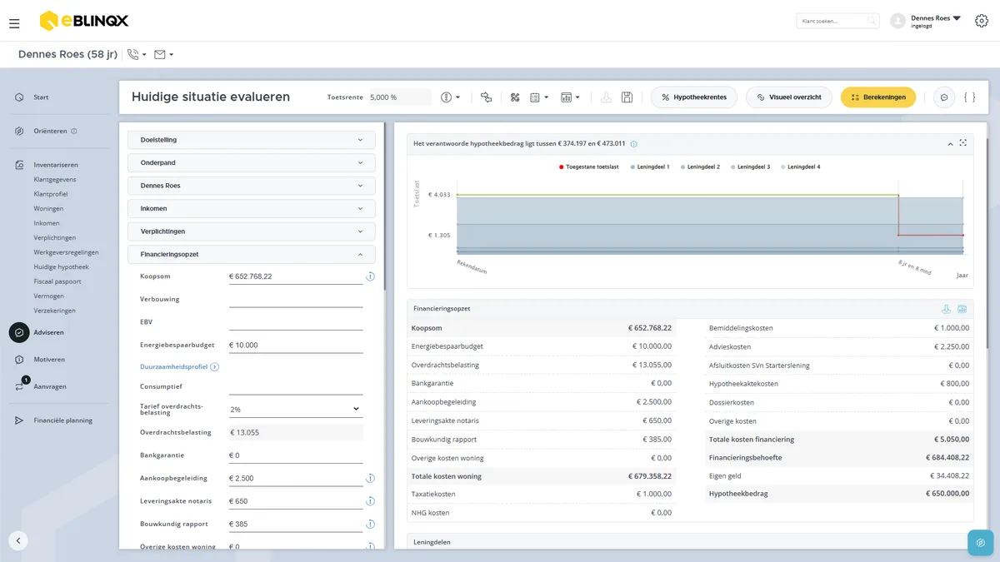
🐞 IT-29821: Correcte weergave financieringsopzet bij 10 jaar voor AOW
Wanneer één van jouw aanvragers binnen 10 jaar van de AOW-datum zit, zie je nu direct de juiste, ingeklapte AOW-lijndiagram in de financieringsopzet. Zo sluit de presentatie perfect aan op de werkelijke situatie én op het visuele gedeelte van het dossier. Je kunt de grafiek eenvoudig uitklappen, vergroten en verder verdiepen, zodat je jouw klant nog beter inzicht geeft in de financiële ontwikkeling richting AOW.
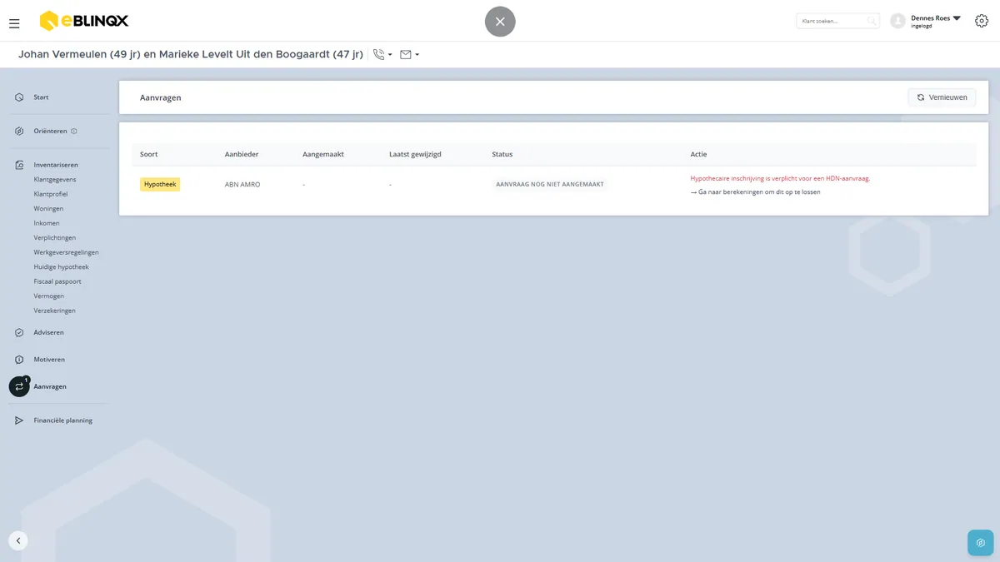
⚙️ IT-29811: Slimmere validatie voor Hypothecaire inschrijving bij aanvragen
Vanaf nu wordt de controle op jouw hypothecaire inschrijving pas uitgevoerd wanneer je daadwerkelijk op Aanvragen klikt. Zo kun je de huidige situatie altijd probleemloos evalueren en loopt jouw adviesflow niet onnodig vast.
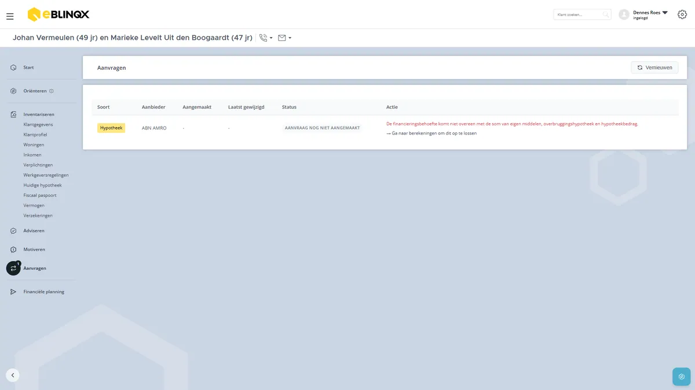
🐞 IT-29801: Voorkomen van versturen HDN-aanvraag bij niet-sluitende berekening
Je kunt nu alleen een HDN-aanvraag versturen wanneer jouw hypotheekberekening volledig sluitend is. Hierdoor voorkom je afwijzingen en herstelwerk achteraf en weet je zeker dat jouw dossier financieel klopt vóór verzending. Dat werkt sneller, duidelijker en professioneler richting de geldverstrekker.
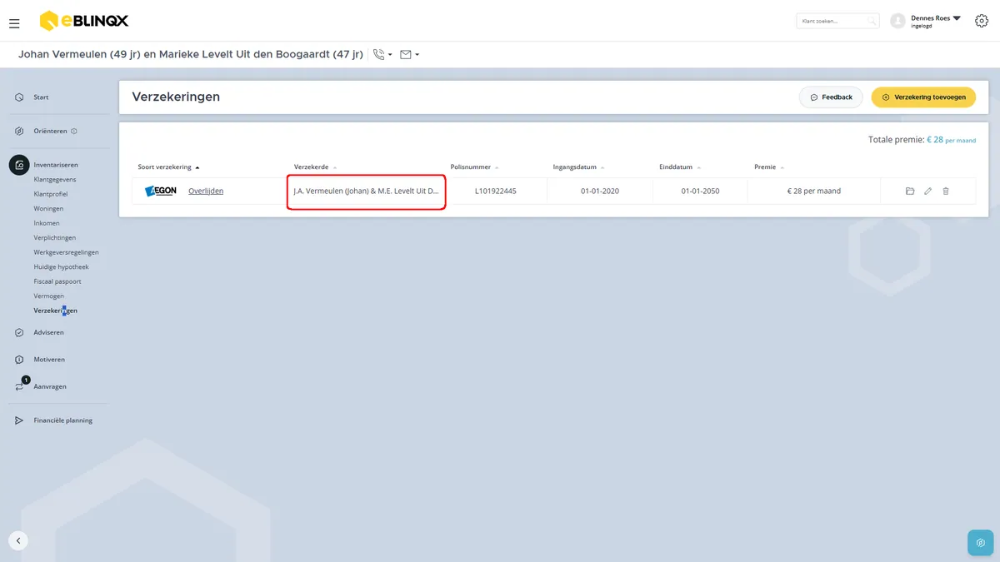
🐞 IT-29236: Nettere weergave van lange namen bij verzekerden
Op de verzamelpagina Verzekeringen worden lange namen van verzekerden nu altijd netjes binnen de kolom weergegeven. Zo blijft het overzicht strak en goed leesbaar, ongeacht hoe lang de naam is. Dat werkt prettiger en zorgt voor een consistentere ervaring tijdens jouw adviesproces.
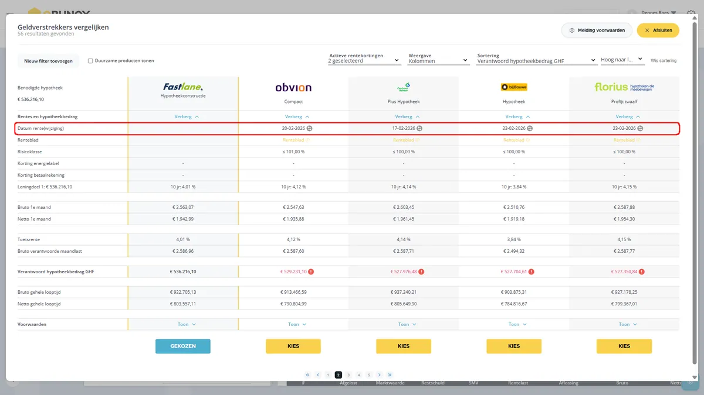
🐞 IT-29729: Commerciële rentes volledig uitgefaseerd voor betrouwbare renteweergave
We hebben het gebruik van commerciële rentes binnen eBlinqx Hypotheekadvies volledig stopgezet. Hierdoor worden rentes nu pas zichtbaar op de daadwerkelijke ingangsdatum én op het juiste moment in het systeem ingeladen. Zo voorkom je dat toekomstige rentedalingen te vroeg zichtbaar zijn en onbedoeld invloed hebben op jouw advies of offerteaanvraag.
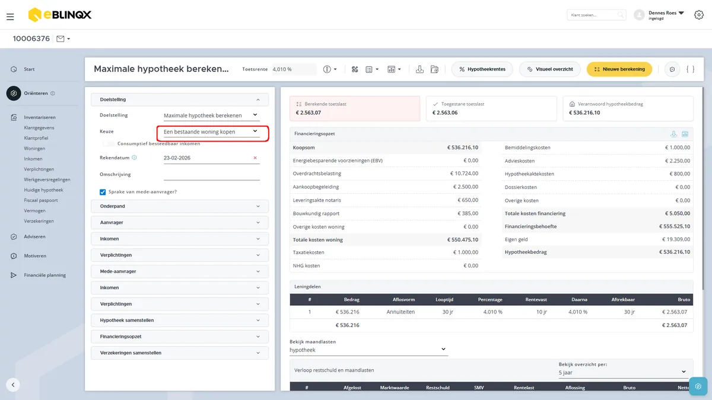
🐞 IT-29712: Correcte startdoelstelling bij nieuwe berekening zonder dossier
Start je een nieuwe berekening zonder dossier? Dan opent deze nu direct met de juiste doelstelling: Maximale hypotheek berekenen met als subdoel Een bestaande woning kopen. Zo kun je sneller en gerichter aan de slag, zonder eerst handmatig de doelstelling aan te passen
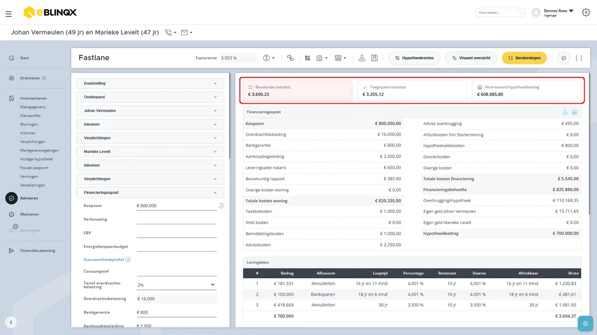
⚙️ IT-29680: Altijd inzicht met het verbeterde 'Visueel overzicht'
Je hoeft tijdens het samenstellen van de hypotheek niet meer te schakelen tussen verschillende pagina’s. Bovenaan de financieringsopzet zie je nu altijd direct de berekende toetslast, de toegestane toetslast en het verantwoorde hypotheekbedrag. Zo houd je continu grip op de belangrijkste cijfers. Komt de berekende toetslast boven de toegestane toetslast? Dan springt dit meteen in het oog dankzij een duidelijke rode markering.
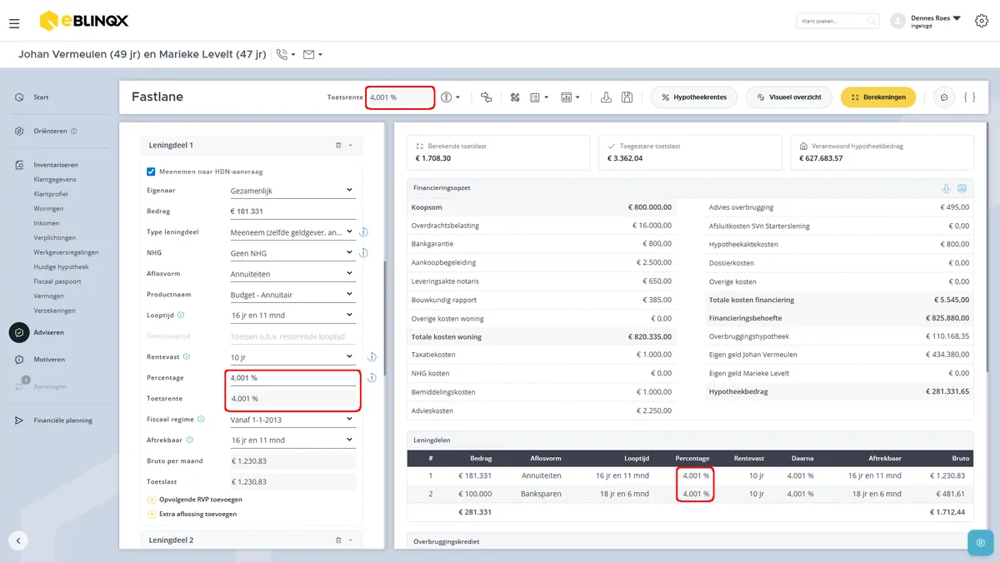
🐞 IT-29271: Consistente toetsrente en woonquote bij afronding op 3 decimalen
Vanaf nu is de toetsrente volledig in lijn met de ingevoerde hypotheekrente, inclusief een eenduidige afronding op 3 decimalen. Voer je bijvoorbeeld 4,001% in, dan wordt deze exact zo getoond én gebruikt in de berekening van de woonquote en maximale leencapaciteit. Hierdoor krijg je altijd een correct berekende woonquote en kun je met vertrouwen jouw advies onderbouwen.
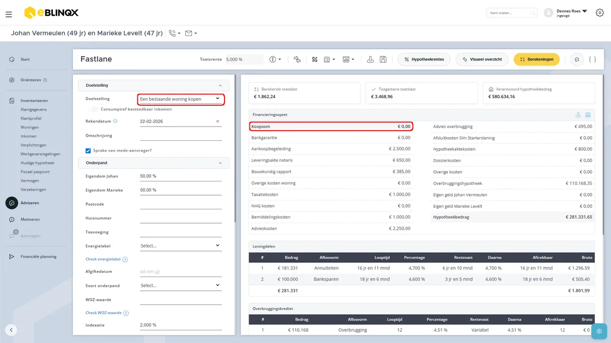
⚙️ IT-29812: Financieringsopzet direct zichtbaar bij starten berekening
Vanaf nu zie je de financieringsopzet direct zodra je een nieuwe berekening start. Je hoeft geen koopsom meer in te vullen om de financieringsopzet in beeld te krijgen. Ook wanneer je een andere doelstelling kiest, blijft de financieringsopzet meteen zichtbaar — zelfs als de koopsom nog leeg is. Zo kun je sneller en overzichtelijker starten met het opzetten van jouw berekening.
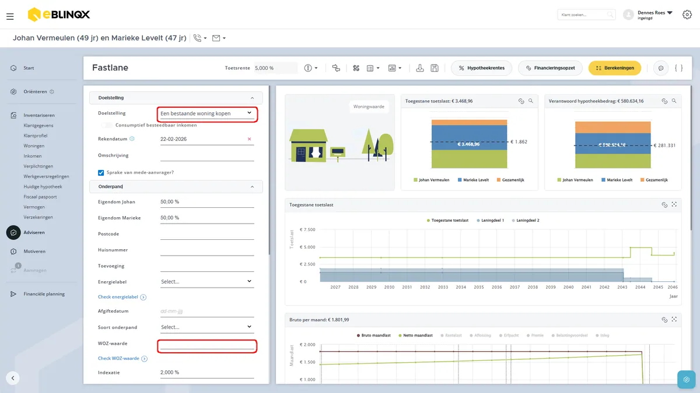
🐞 IT-29719: Geen onnodige validatiemeldingen bij wisselen doelstelling woning
Wanneer je in Advies jouw doelstelling wisselt naar een bestaande of nieuwe woning kopen, krijg je nu niet langer direct een validatiemelding over de WOZ-waarde en marktwaarde. Zo werk je soepeler door je adviesproces heen en houd je zelf de regie over wanneer je gegevens aanvult. Dat zorgt voor meer rust in jouw workflow en een prettige, efficiënte gebruikerservaring.
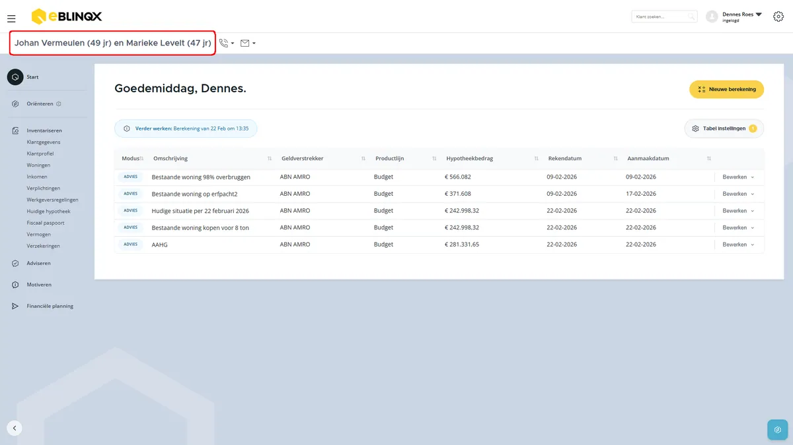
🆕 IT-27717: Naam én leeftijd van mede-aanvrager zichtbaar in titelbalk
In de titelbalk van de klantgegevens zie je nu, naast de naam van de aanvrager, ook direct de naam van de mede-aanvrager – inclusief hun leeftijden. Zo zie je in één oogopslag met wie je te maken hebt, zonder extra schermen te openen of gegevens te controleren. Efficiënt, overzichtelijk en helemaal afgestemd op jouw dagelijkse praktijk.
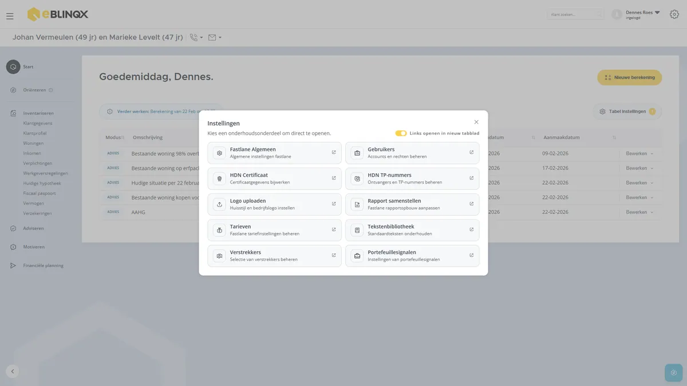
⚙️ IT-29744: Instellingenmenu uitgebreid en consistenter gemaakt
In het vernieuwde instellingenmenu heb je nu weer direct toegang tot de 'Fastlane Algemeen' via een duidelijk zichtbare knop linksboven. Daarnaast is de knop ‘PortefeuilleSignalen’ technisch gelijkgetrokken met de overige menu-items. Dit zorgt voor een logischere opbouw, consistente bediening en een prettige, uniforme gebruikerservaring binnen jouw instellingen.
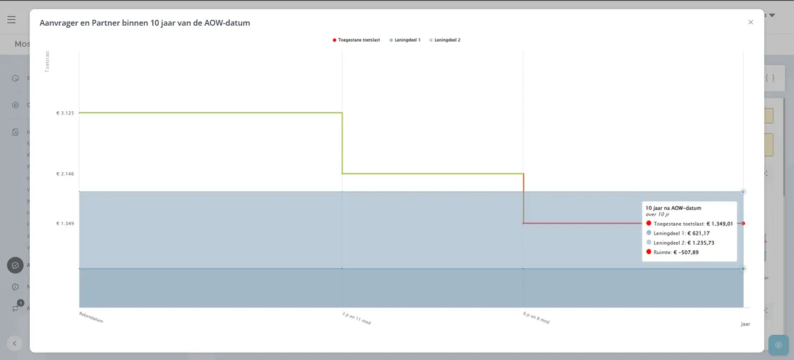
🐞 IT-29429: Correcte LTI-grafiek bij afgeloste leningen in toekomstscenario’s
In toekomstscenario’s, zoals de grafiek ‘10 jaar voor AOW-datum’, worden voortaan alleen de leningen meegenomen die op dat moment daadwerkelijk nog lopen. Is een lening volledig afgelost vóór het toetsmoment? Dan wordt deze automatisch buiten beschouwing gelaten in de LTI-berekening. Dat betekent voor jou: meer betrouwbaarheid in je toekomstscenario’s, duidelijkere inzichten voor je klant en extra zekerheid dat je advies gebaseerd is op de juiste uitgangspunten.
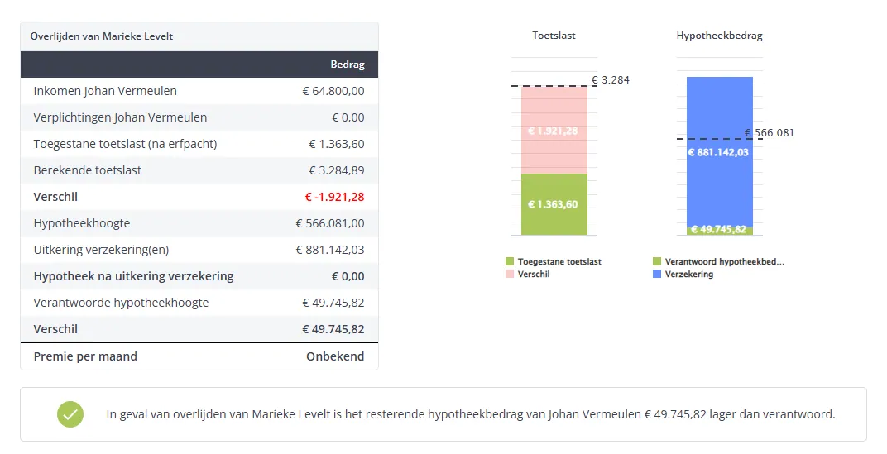
⚙️ IT-29362: Duidelijkere beoordeling bij overlijden binnen GHF-advies
Je krijgt nu een nog helderder en consistenter advies bij het thema overlijden. De rapporttekst is opgeschoond door overbodige toelichting over de Anw-uitkering te verwijderen. Daarnaast zie je in één oogopslag of de resterende hypotheek na overlijden verantwoord is, dankzij duidelijke groene en rode statusindicatoren. Zo interpreteer je het advies sneller en met meer zekerheid richting jouw klant.
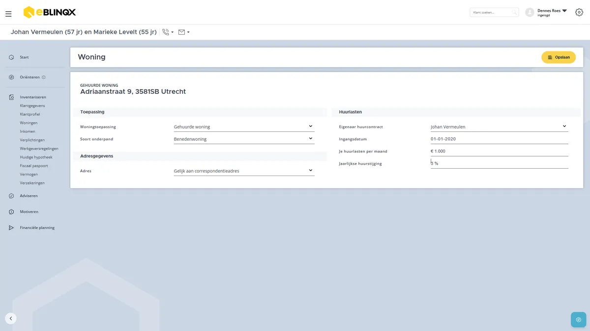
🐞 IT-29565: Correcte verwerking van huurwoning in adviesrapport
Wanneer je een huidige woning als huurwoning vastlegt, wordt deze nu ook correct als huurwoning weergegeven in het adviesrapport. Onjuiste eigendomsvermeldingen zijn verholpen, zodat het rapport weer volledig aansluit op jouw invoer en je een helder en betrouwbaar advies kunt delen met je klant.
-------------------------------------
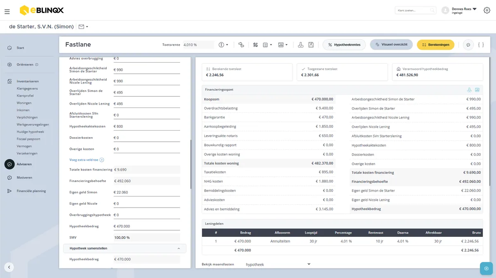
⚙️ IT-29663: Visueel overzicht in plaats van Grafieken
De knop ‘Grafieken’ in de header heet nu ‘Visueel overzicht’. Zo zie je in één oogopslag dat je hier terechtkunt voor een compleet visueel beeld van de situatie. De nieuwe benaming sluit beter aan bij wat je daadwerkelijk te zien krijgt en maakt navigeren nog duidelijker en intuïtiever.
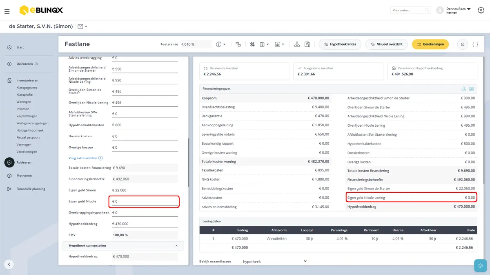
🐞 IT-29697: Eigen geld wordt weer standaard ingevuld met 0,00
Vanaf nu zie je bij het opzetten van de financiering direct standaard 0,00 bij het eigen geld van jouw aanvrager en of mede-aanvrager. Zo hoef je niets extra’s in te vullen als er geen eigen geld is en kun je sneller en soepeler door met jouw advies.
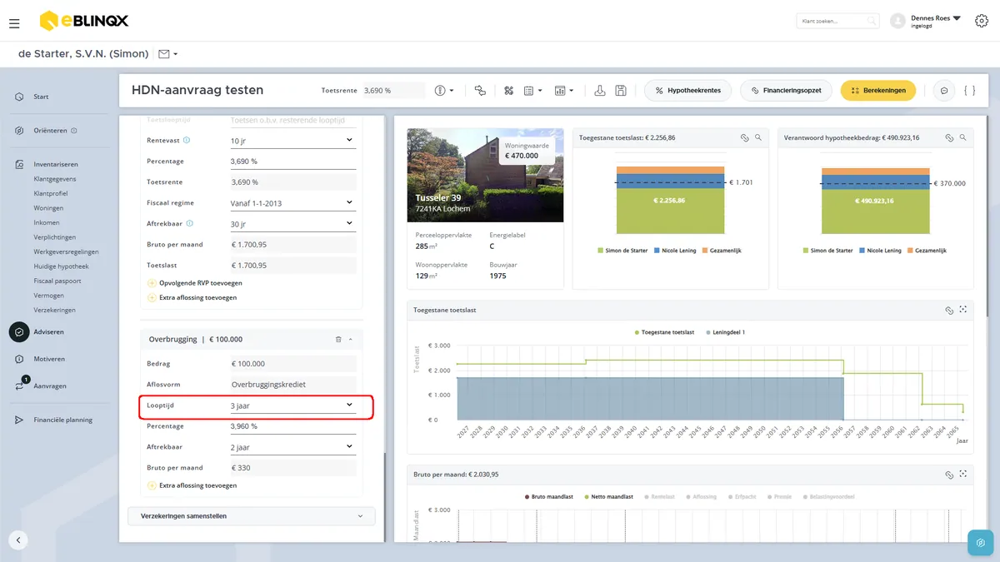
⚙️ IT-28432: Maximale looptijd overbruggingslening nu tot 36 maanden instelbaar
Je kunt de looptijd van de overbruggingslening nu verlengen van 24 naar 36 maanden. Daarmee sluit de berekening in de sidebar weer goed aan op de situatie van de klant — vooral bij nieuwbouw is dat een fijne oplossing.
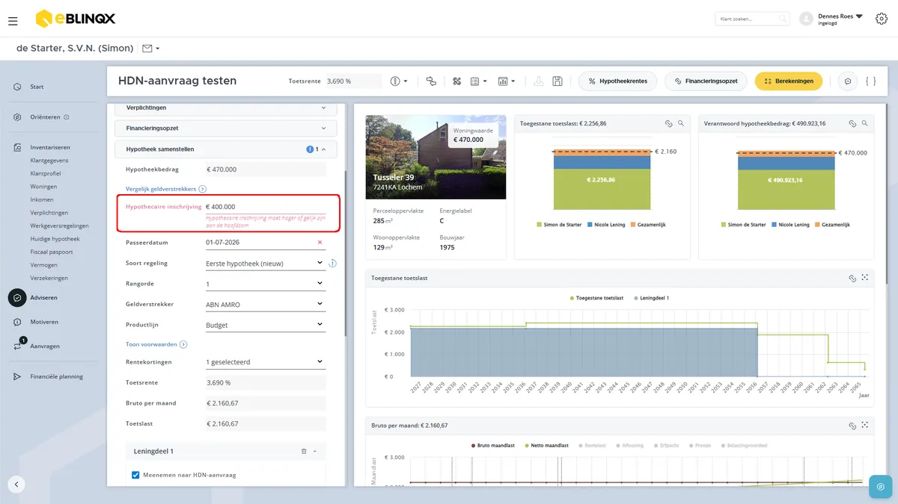
⚙️ IT-28922: Verbeterde controle op hypothecaire inschrijving
Je ziet het veld Hypothecaire inschrijving nu weer duidelijk terug bij het samenstellen van de hypotheek. Daarnaast controleert eBlinqx Hypotheekadvies automatisch of het ingevulde bedrag logisch is ten opzichte van het totale hypotheekbedrag. Zo weet je direct waar je aan toe bent en voorkom je onnodige correcties verderop in het proces.
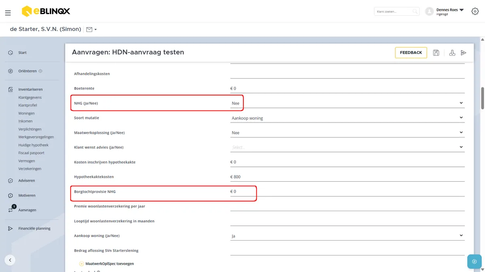
🐞 IT-29727: Correcte verwerking NHG zonder kosten in HDN
Werk je met leningdelen op NHG zonder kosten én staan de NHG-kosten in de berekening op 0? Dan wordt in de HDN-hypotheekconstructie voortaan automatisch NHG op “NEE” gezet. Hierdoor voorkomt eBlinqx Hypotheekadvies dat HDN onterecht om kosten vraagt terwijl die er niet zijn. Zo verloopt jouw HDN-aanlevering soepel en zonder onnodige meldingen, en kun je efficiënter door met je dossier.
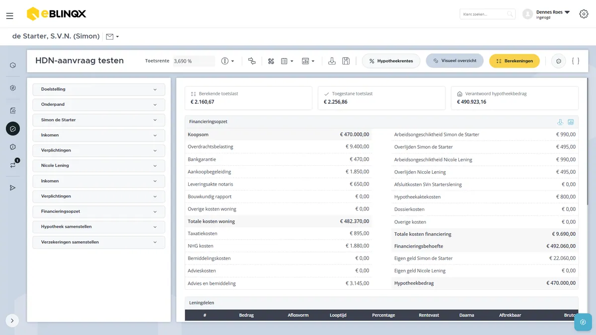
🐞 IT-29746: Berekeningen in IS-getoetst status weer volledig bewerkbaar
Je kunt berekeningen in de status IS-getoetst weer volledig gebruiken zoals je gewend bent. Automatisch ingevulde velden worden weer correct gevuld en de doorrekening werkt direct bij wijzigingen. Hierdoor kun je zonder onderbrekingen verder met je advies en behoud je de snelheid en betrouwbaarheid in jouw adviesproces.
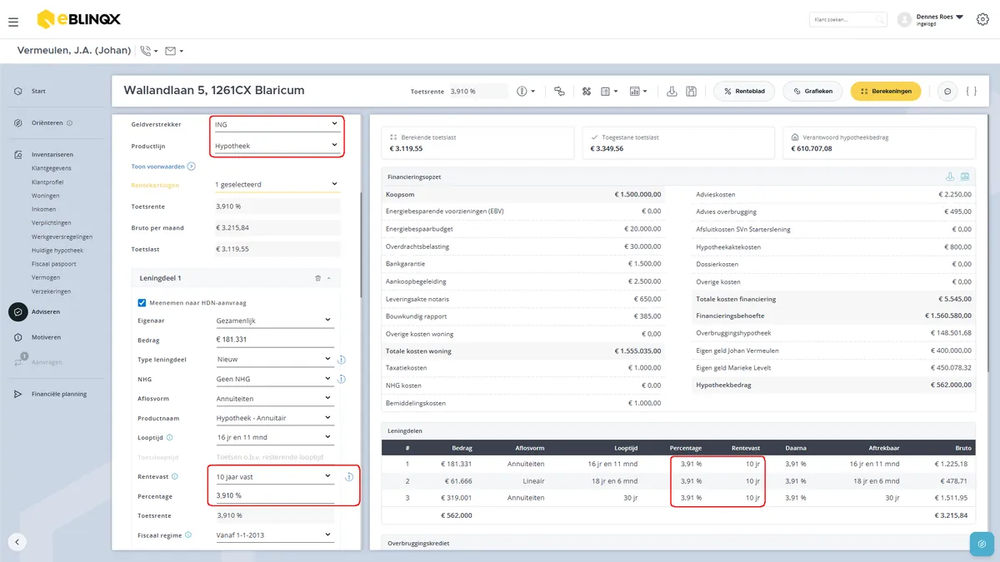
🐞 IT-29363 & IT-29696: Slimmere rentevastperiode- en rentelogica bij productwissels
eBlinqx Hypotheekadvies ondersteunt je nu nog beter bij het meenemen of wisselen van een hypotheek, doordat rentevastperiodes en rentes consistenter worden verwerkt. Pas je bij een productwissel de rentevastperiode aan? Dan wordt de bijbehorende rente automatisch voor je ververst. Ook wanneer je na een wissel van geldverstrekker of product de (resterende) rentevastperiode wijzigt, haalt eBlinqx Hypotheekadvies direct het juiste rentepercentage op. Je hoeft het renteveld dus niet meer handmatig leeg te maken of opnieuw te laten ophalen om de actuele rente te zien. Zo is je berekening meteen correct en bespaar je tijd én onnodige frustratie tijdens het vergelijken van producten.
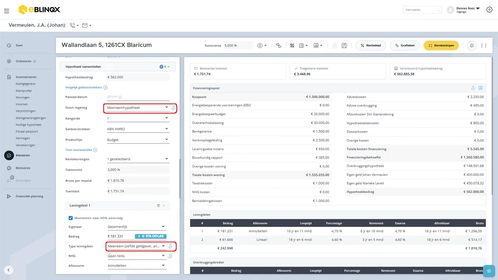
⚙️ IT-29698: Slimmere voorinvulling bij meeneemhypotheek
Wanneer je een bestaande hypotheek meeneemt naar een nieuwe woning, sluit de voorinvulling nu beter aan op jouw werkwijze. De regeling wordt automatisch als meeneemhypotheek ingesteld en bestaande leningdelen worden correct als meeneem gemarkeerd. Voeg je extra financiering toe? Dan wordt dit direct als nieuw leningdeel herkend. Zo werk je sneller, logischer en met minder kans op fouten.
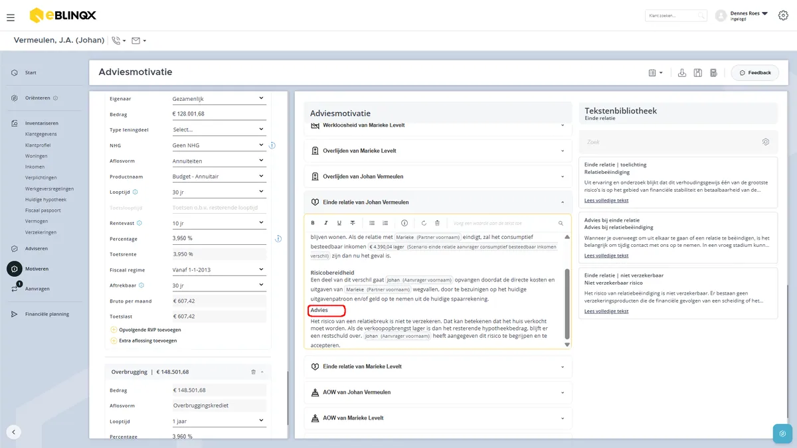
🐞 IT-29337: Duidelijke opsplitsing ‘Einde relatie’ met aparte alinea ‘Advies’
Binnen de CBI-adviesmethodiek is het tekstblok ‘Einde relatie’ nu overzichtelijk opgesplitst in een duidelijke structuur met een aparte alinea ‘Advies’. Hierdoor wordt het onderscheid tussen feitelijke context (doelstelling en risicobereidheid) en jouw daadwerkelijke advies helder zichtbaar. Dit zorgt voor een methodisch sterkere onderbouwing, sluit beter aan bij de GHF-richtlijnen en maakt jouw adviesrapport nóg duidelijker en professioneler voor je klant. Zo werk je efficiënter én met meer overtuigingskracht aan een goed gestructureerd dossier.
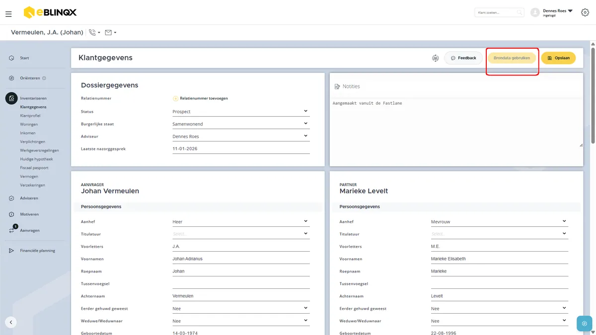
⚙️ IT-29690: Inzicht in brondata met tijdelijke logging
Om de kwaliteit en betrouwbaarheid van de gegevensverwerking verder te optimaliseren, is er tijdelijke logging toegevoegd op de binnenkomende brondata. Hierdoor krijgen we helder inzicht in welke data wordt aangeleverd en kunnen we sneller en gerichter verbeteringen doorvoeren. Dit zorgt ervoor dat jij kunt vertrouwen op correcte en consistente gegevens in jouw hypotheekadvies, zodat je efficiënt en zonder verrassingen blijft werken.
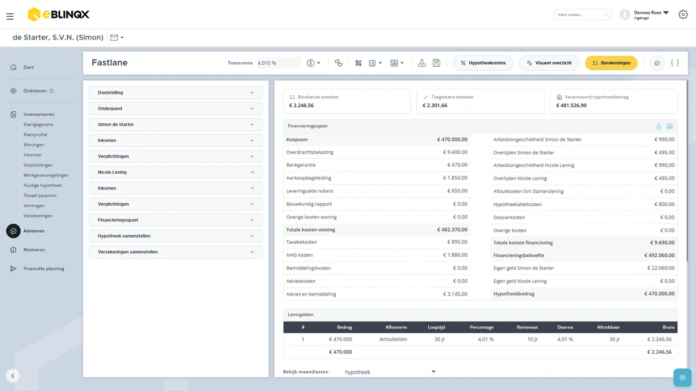
⚙️ IT-29680: Altijd inzicht met het nieuwe Visueel overzicht
Je hoeft tijdens het samenstellen van de hypotheek niet meer te schakelen tussen verschillende pagina’s. Bovenaan de financieringsopzet zie je nu altijd direct de berekende toetslast, de toegestane toetslast en het verantwoorde hypotheekbedrag. Zo houd je continu grip op de belangrijkste cijfers. Komt de berekende toetslast boven de toegestane toetslast? Dan springt dit meteen in het oog dankzij een duidelijke rode markering. De eerdere gele waarschuwing is vervangen door deze heldere signalering, wat zorgt voor meer rust en overzicht. Daarnaast hebben we de pagina ‘Grafieken’ hernoemd naar ‘Visueel overzicht’, zodat de naam beter aansluit bij wat je daar ziet. Dat werkt net even duidelijker en prettiger.
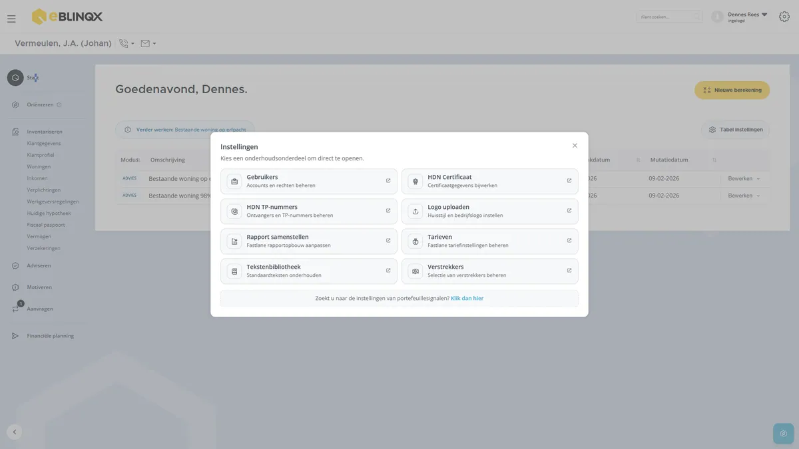
⚙️ IT-29684: Handige instellingen-menu
Via de nieuwe instellingenknop rechtsboven open je nu razendsnel alle beheerpagina’s in een aparte tab. Zo kun je gewoon in eBlinqx Hypotheekadvies blijven doorwerken terwijl je ondertussen je instellingen regelt.
Je kunt hier eenvoudig nieuwe gebruikers aanmaken, het HDN-certificaat instellen, je TP-nummers registreren en bijvoorbeeld je tarieven voor de financieringsopzet vastleggen. Alles overzichtelijk bij elkaar, zodat je snel weer verder kunt.
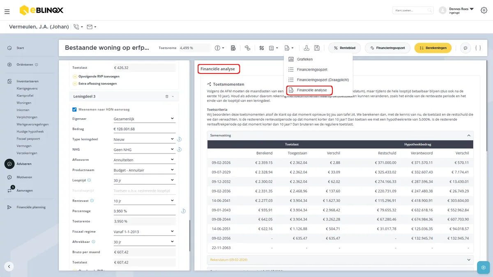
⚙️ IT-29662: Duidelijkere benaming ‘Financiële analyse’ in plaats van ‘Acceptatienormen’
We hebben de term ‘Acceptatienormen’ aangepast naar ‘Financiële analyse’. Deze naam sluit beter aan bij wat je daadwerkelijk doet: een complete financiële beoordeling van jouw klant. Zo weet je direct wat je kunt verwachten binnen dit onderdeel en werk je nog duidelijker en efficiënter in jouw adviesproces.
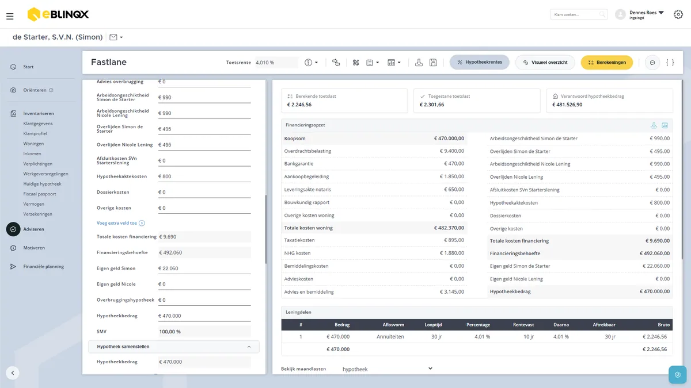
⚙️ IT-29682: Hypotheekrentes nu direct bereikbaar via een knop in de header
Je vindt de hypotheekrentes nu een stuk sneller terug dankzij een nieuwe knop ‘Renteblad’ in de header. Zo kun je direct naar de vergelijkingspagina en heb je jouw rente-overzicht altijd binnen één klik bij de hand.
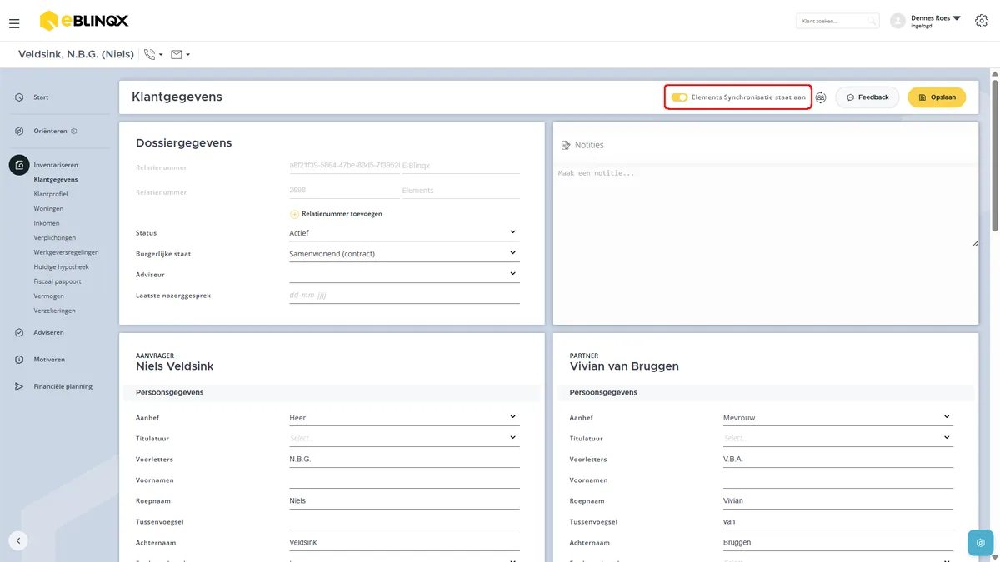
🆕 IT-29613: Endpoint om Elements-sync eenvoudig weer aan te zetten
Vanaf nu is er een endpoint beschikbaar waarmee Elements/eBlinqx het Elements-sync schuifje automatisch weer kan inschakelen nadat er aan hun kant een SX20 is ingelezen. Zo hoef jij hier niet meer handmatig achteraan en blijft de synchronisatie soepel doorlopen, zodat jij sneller verder kunt met je advies.
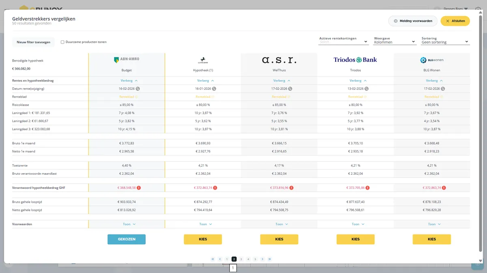
⚙️ IT-29591: Snellere hypotheekvergelijkingen
We hebben de berekeningen achter de schermen slimmer ingericht. Het systeem doet minder onnodige controles, hergebruikt vaker dezelfde gegevens en hoeft minder dingen opnieuw uit te rekenen. Daardoor kost een vergelijking minder tijd. De uitkomst van je berekening blijft precies hetzelfde. We hebben niets veranderd aan de inhoud, alleen aan de snelheid. Zo kun jij sneller werken en houd je meer aandacht voor je klant.
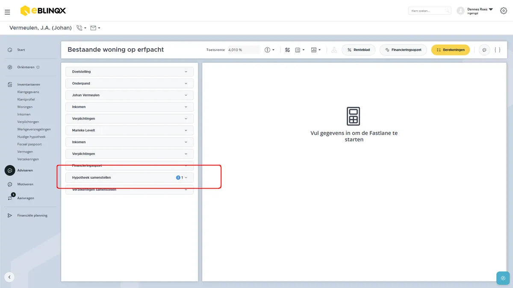
⚙️ IT-29643: Ook controle op opzet bij inladen van bestaande berekening
Bij het inladen van een bestaande berekening wordt nu ook de opzet automatisch gecontroleerd. Zo weet je direct dat alles inhoudelijk klopt en volledig aansluit op de actuele instellingen. Dit geeft je extra zekerheid en voorkomt dat je handmatig controles moet uitvoeren, zodat jij efficiënter en met meer vertrouwen verder kunt adviseren.
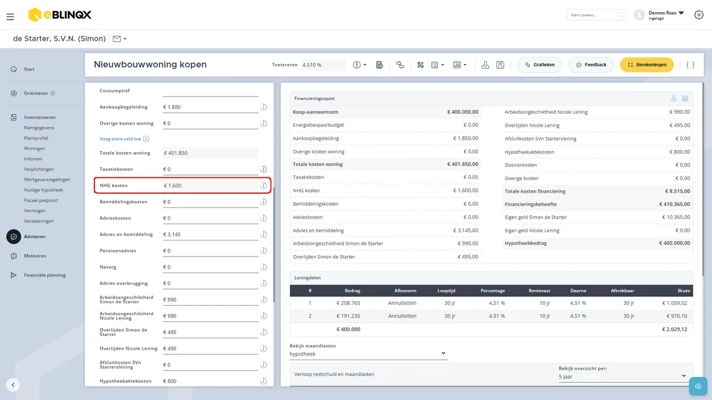
🐞 IT-29669: Automatisch verwijderen van custom vlag bij gelijke NHG-kosten
Wanneer de NHG-kosten gelijk zijn aan de kosten die wij berekenen, wordt de custom vlag nu automatisch verwijderd. Zo blijft jouw dossier overzichtelijk en werk je altijd met de juiste signalering, zonder onnodige meldingen. Dit zorgt voor een schonere weergave én meer vertrouwen in de juistheid van jouw berekeningen.
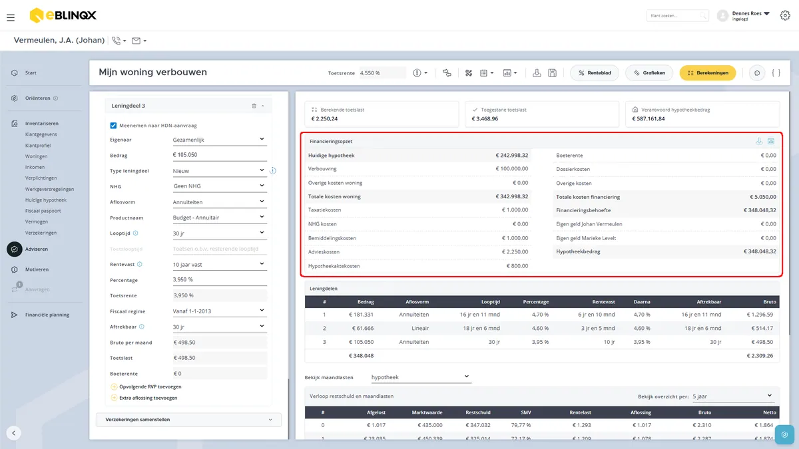
🐞 IT-26249: Correcte advieskosten overbrugging bij verbouwen
De advieskosten voor een overbruggingshypotehek worden nu altijd correct ingesteld op € 0,00 wanneer je kiest voor de doelstelling Mijn woning verbouwen. Zo zie je alleen kosten die daadwerkelijk van toepassing zijn en blijft je adviestraject helder en betrouwbaar.
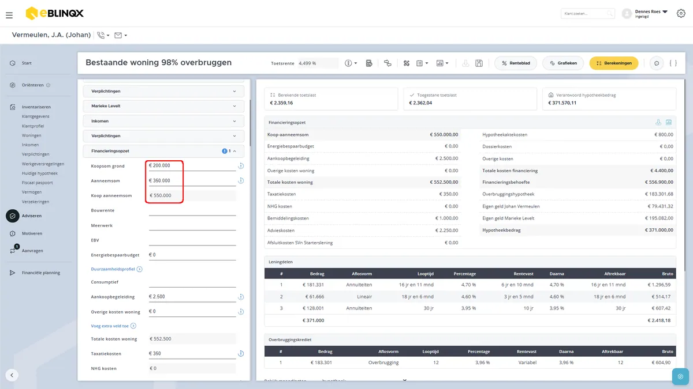
🐞 IT-29549: Sidebar-waarde ‘Koop aanneemsom’ nu altijd synchroon bij nieuwbouw
Wanneer je wisselt naar de doelstelling ‘Een nieuwbouwwoning kopen’, wordt de berekende ‘Koop aanneemsom’ in de sidebar nu meteen correct bijgewerkt op basis van koopsom grond en aanneemsom. Zo zie je overal dezelfde bedragen terug en kun je sneller en met meer vertrouwen je financieringsopzet controleren.
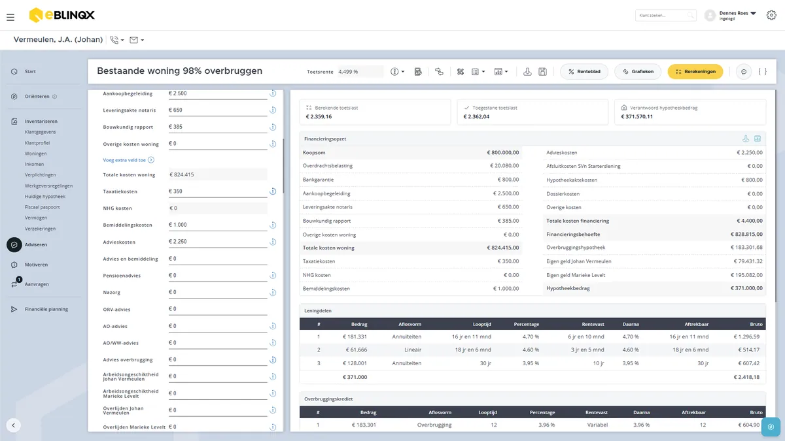
⚙️ IT-29619: Automatische herberekening in de financieringsopzet
Wanneer je gegevens aanpast in de financieringsopzet (zoals jouw eigen geld), worden alle bedragen nu direct automatisch opnieuw doorgerekend. Zo zie je meteen de actuele lasten en hypotheekbedragen en kun je sneller en zekerder je advies afronden.
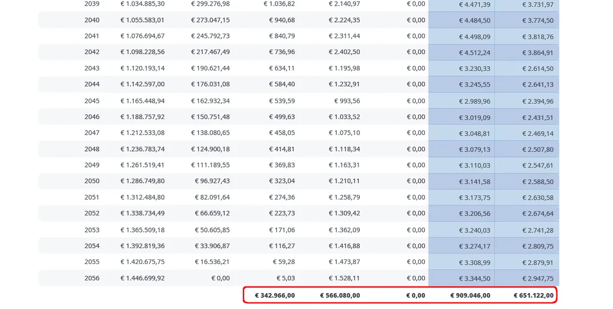
🐞 IT-29291: Correcte weergave van totalen in maandlastenoverzicht
De totalen in het Volledig maandlastenoverzicht worden nu alleen nog netjes weergegeven aan het einde van de tabel. Zo zie je de totalen precies waar je ze verwacht, zonder verwarring door dubbele vermeldingen. Dat maakt het overzicht duidelijker en prettiger om met je klant te bespreken.
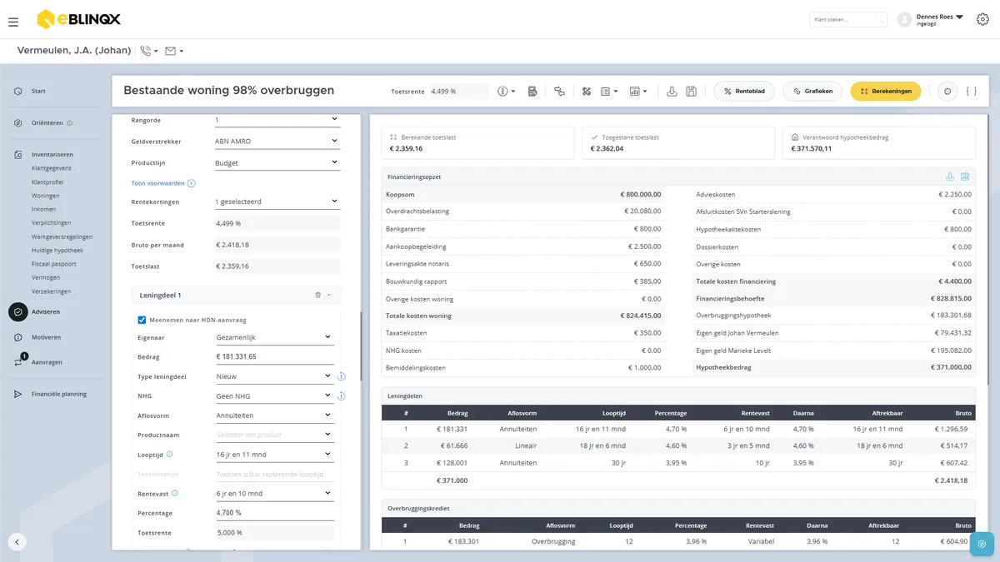
🐞 IT-29651: Foutmeldingen bij inladen bestaande berekeningen opgelost
Open je een bestaande berekening? Dan wordt de financiering nu weer altijd goed getoond, zonder foutmeldingen. Soms ging het mis doordat een handmatige aanpassing nog ‘aan’ stond, terwijl het bijbehorende bedrag niet was opgeslagen. Het systeem vulde dan zelf een bedrag in. Daardoor klopte de berekening niet meer en kreeg je een melding dat er iets niet goed was. Dat hebben we opgelost. Staat een handmatige aanpassing aan, maar is er geen bedrag opgeslagen? Dan zetten we het bedrag nu op 0. Het systeem vult dan niet meer automatisch een ander bedrag in. Zo kun je bestaande berekeningen weer zonder zorgen openen en direct verder met je hypotheekadvies.
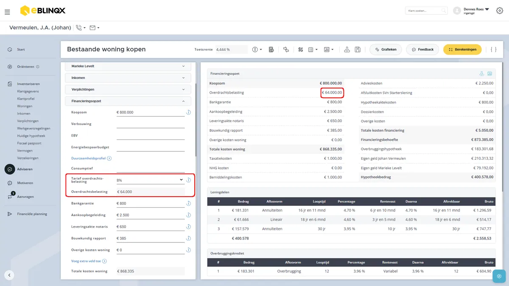
🆕 IT-29103: 8% overdrachtsbelasting toegevoegd aan keuzelijst
De keuzelijst voor overdrachtsbelasting is uitgebreid met het nieuwe wettelijke tarief van 8% voor niet-zelfbewoning (per 2026). Je kunt dit percentage nu direct selecteren in de lijst, zonder gebruik te maken van de optie “Anders” en zonder handmatige invoer. Dat werkt sneller, voorkomt invoerfouten en zorgt voor extra gemak tijdens het opstellen van jouw advies. De selectie van 8% werkt precies zoals je gewend bent bij de andere vaste percentages. Uiteraard blijft “Anders” beschikbaar voor afwijkende situaties.
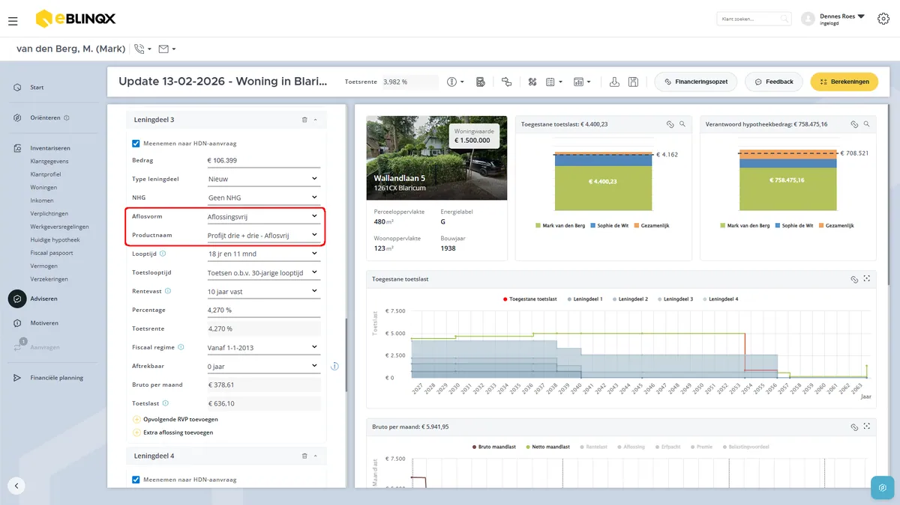
🐞 IT-29606: Correcte renteweergave bij aflosvrij hersteld
Goed nieuws! De renteweergave voor Florius Drie+Drie met aflosvorm aflosvrij is gecorrigeerd. Waar eerder onbedoeld het tarief van de productlijn Hybride werd getoond, zie je nu altijd het juiste rentepercentage dat hoort bij de gekozen aflosvorm. Zo kun je volledig vertrouwen op de getoonde rente in eBlinqx Hypotheekadvies en geef je jouw klant direct een correct en helder advies, zonder extra controle of twijfel.
🐞 IT-29564: Oplossing voor opslaan premieduur bij Scildon ORV
Het aanpassen van de premieduur bij een Scildon lineaire overlijdensrisicoverzekering werkt nu zoals je verwacht. Wanneer je een kortere premieduur instelt, wordt deze correct opgeslagen en direct zichtbaar in het dossier. Zo sluit de inventarisatie weer perfect aan op de productvoorwaarden en kun je met vertrouwen je advies afronden.
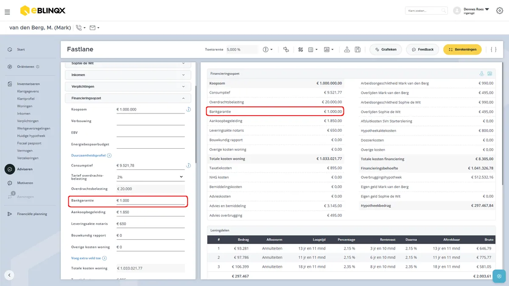
🐞 IT-29614: Bankgarantiekosten weer zichtbaar in de sidebar
Bij het kopen van een bestaande woning zie je de kosten van de bankgarantie nu ook weer direct terug in de sidebar. Zo heb je in één oogopslag een compleet en consistent overzicht van alle kosten, zonder dat je hoeft te schakelen naar de financieringsopzet. Dat werkt wel zo prettig.
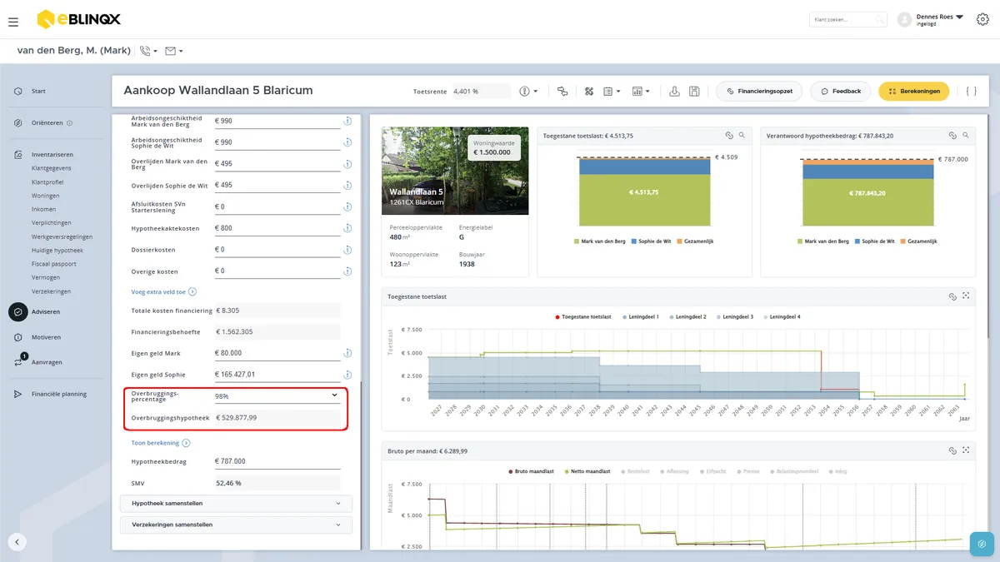
🐞 IT-29556: Overbruggingspercentage blijft correct opgeslagen in je berekening
Wanneer je het overbruggingspercentage aanpast, wordt nu niet alleen het overbruggingsbedrag, maar ook jouw gekozen percentage netjes opgeslagen. Open je later dezelfde berekening opnieuw, dan zie je direct weer de juiste instelling terug en blijft alles consistent.
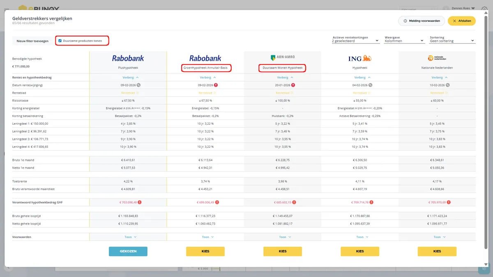
🌱 IT-22653: Nieuw filter ‘Verduurzamen’ bij geldverstrekkers vergelijken
Bij het vergelijken van geldverstrekkers heb je nu extra regie dankzij het nieuwe filter ‘Verduurzamen’. Deze optie staat standaard uit, zodat je overzicht behoudt. Wil je juist gericht duurzame hypotheekproducten meenemen? Dan zet je de checkbox eenvoudig aan en zie je direct relevante producten zoals de GroenHypotheek en Duurzaam Wonen Hypotheken van onder andere Rabobank, ABN AMRO, ASN Bank en Florius. Zo vergelijk je sneller en makkelijker precies de producten die passen bij de verduurzamingswens van jouw klant.
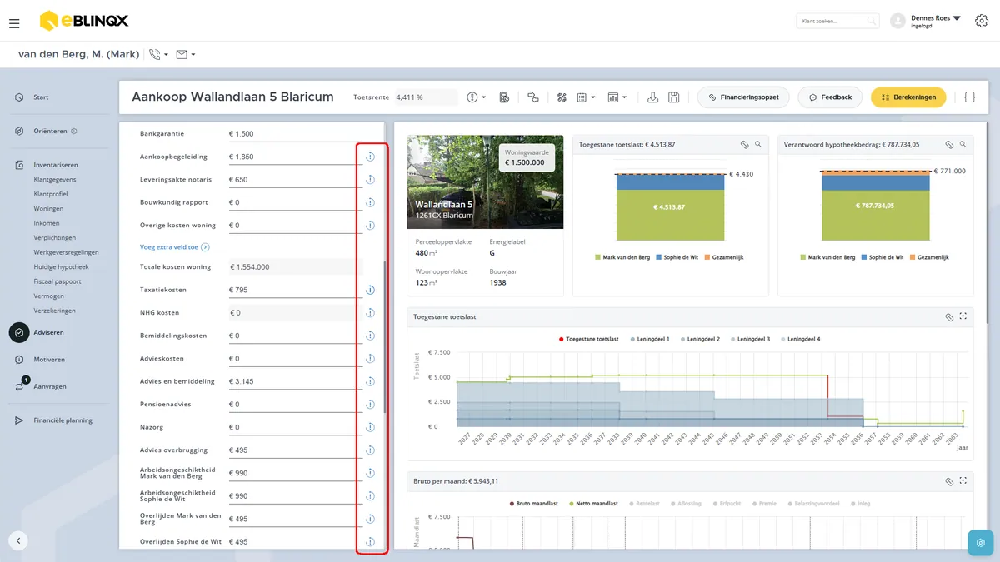
🐞 IT-29424: Opgeslagen berekeningen behouden jouw tarieven zoals je ze hebt vastgelegd
Vanaf nu worden tarieven uit een bestaande berekening, niet langer automatisch geüpdatet zodra je tarieven in de algemene instelling aanpast. Jouw tarieven worden bij het opslaan vastgezet als berekende waarden, waardoor je altijd kunt vertrouwen op exact dezelfde tarieven wanneer je de berekening later terugopent of gebruikt in je advies.
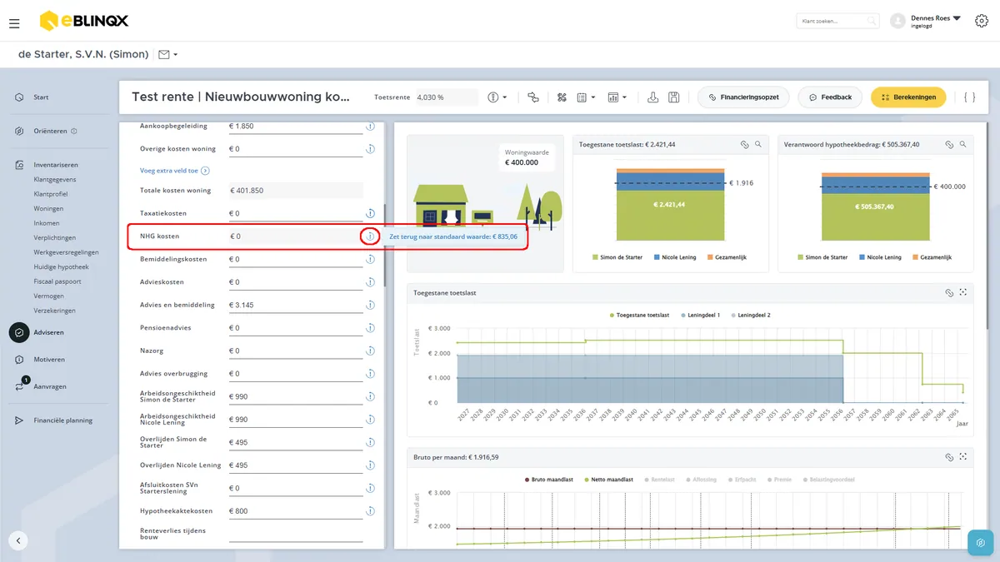
🐞 IT-29590: NHG-kosten bewegen weer mee bij leningwijzigingen
Je kunt bestaande berekeningen nu probleemloos aanpassen zonder opnieuw te hoeven beginnen. Wanneer je het leningbedrag wijzigt, worden de NHG-kosten automatisch opnieuw berekend op basis van het juiste bedrag. Zo werk je altijd met correcte cijfers en bespaar je tijd bij het aanpassen van bestaande dossiers.
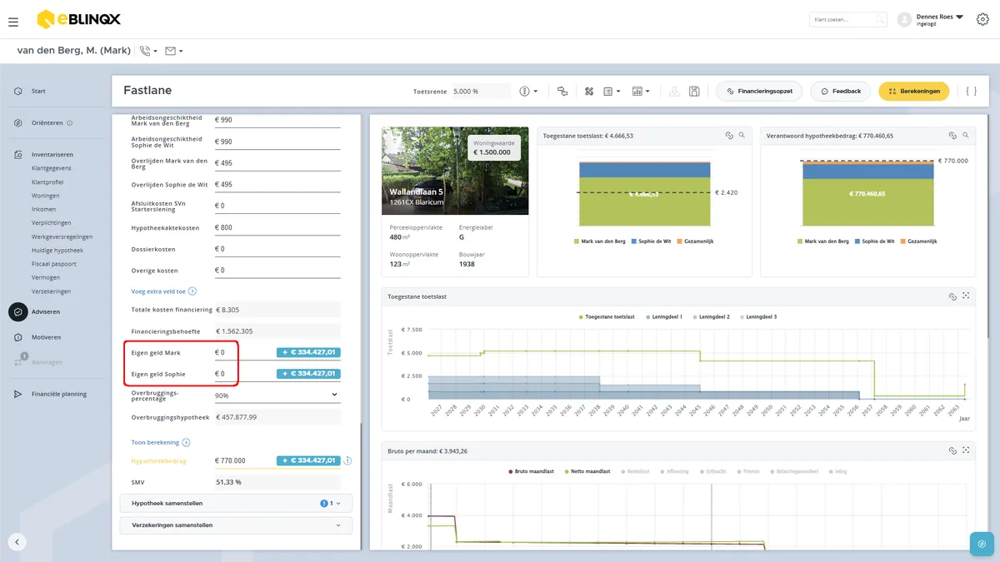
🐞 IT-29588: Eigen geld direct correct ingevuld bij nieuwe berekening
Wanneer je een nieuwe berekening start, worden de velden ‘Eigen geld’ van jou als aanvrager én van je partner meteen netjes gevuld met € 0, in plaats van het veld leeg te laten. Zo heb je direct een duidelijk en correct startpunt en kun je zonder extra handelingen vlot verder met je advies.
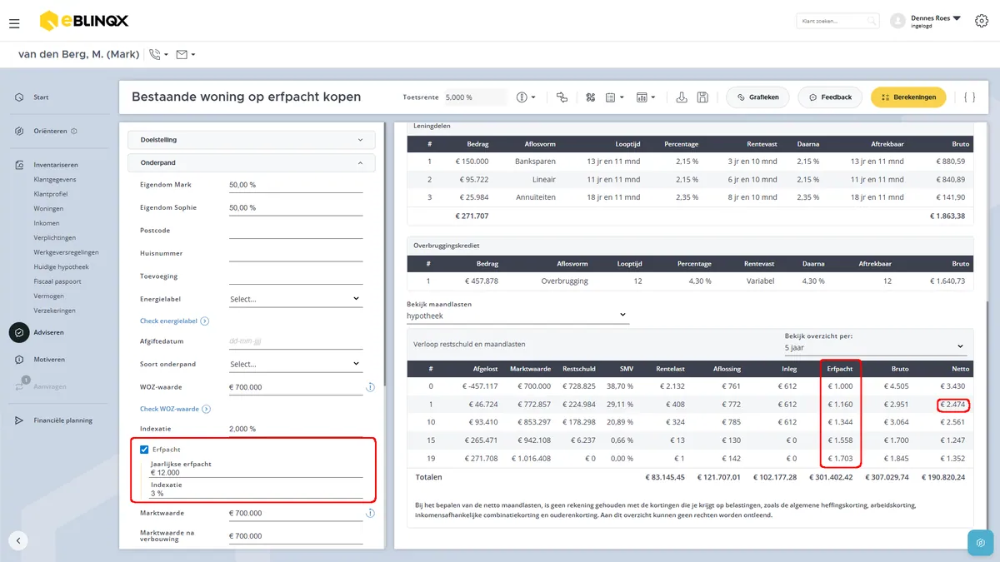
⚙️ IT-29251: Duidelijkere en correcte bruto-netto maandlastberekening bij erfpacht
Je krijgt nu volledig inzicht in hoe de bruto- en netto maandlasten worden opgebouwd wanneer erfpacht wordt meegenomen. eBlinqx Hypotheekadvies past het fiscale voordeel correct toe en toont een heldere uitsplitsing van hypotheeklasten, erfpachtcanon en belastingvoordeel. Zo kun je de berekening eenvoudig controleren en helder uitleggen aan jouw klant.
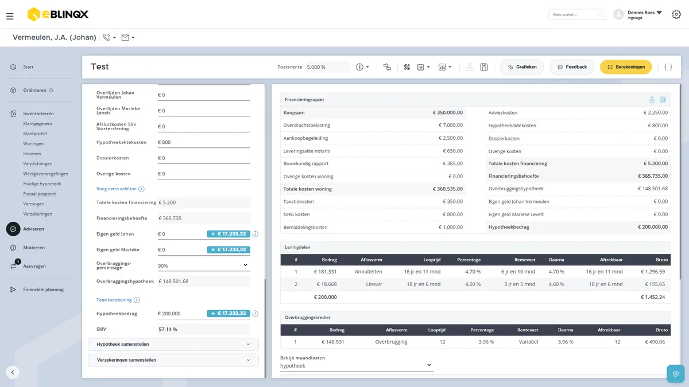
🆕 IT-29166: Zelf bepalen hoe het eigen geld wordt verdeeld (module) 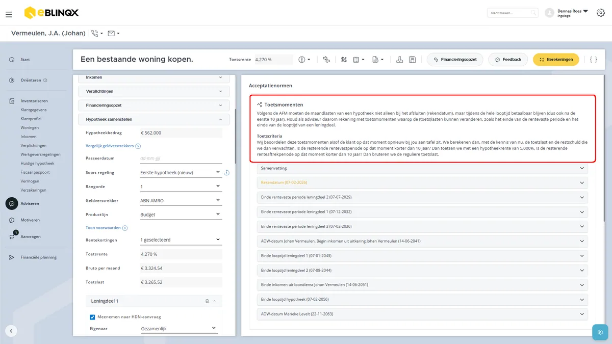
Je krijgt nu meer regie bij het oplossen van een verschil tussen de financieringsbehoefte en de benodigde hypotheek. Je bepaalt zelf hoe je eigen geld, het hypotheekbedrag en een eventuele overbrugging met elkaar combineert. Pas je bedragen aan of overschrijf je ze? Dan blijft het door jou gekozen hypotheekbedrag gewoon staan en wordt het resterende verschil logisch en consistent verwerkt. Zo houd je overzicht, voorkom je onverwachte herberekeningen en werk je sneller toe naar een duidelijke en betrouwbare financieringsopzet voor jouw advies.
⚙️ IT-29293: Duidelijkere toelichting bij toetsmomenten in acceptatienormen
Je krijgt nu extra context bij de toetsmomenten onder de acceptatienormen. Met de nieuwe inleidende toelichting zie je direct waarom deze toetsingen plaatsvinden en hoe ze worden beoordeeld. Dit helpt je om beter rekening te houden met toekomstige veranderingen in maandlasten en om je advies nog duidelijker en onderbouwder met je klant te bespreken.
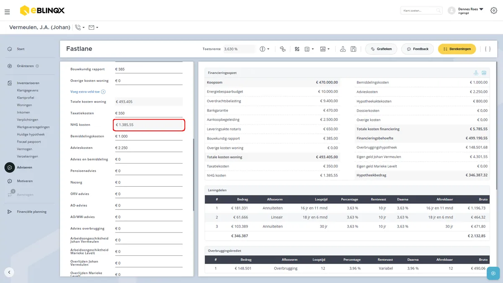
⚙️ IT-29546: NHG kosten is nu een berekend veld
Het veld NHG kosten is aangepast naar een zogenaamd 'berekend veld'. Dat betekent dat de borgtochtprovisie voortaan automatisch wordt berekend op basis van jouw keuze voor NHG binnen de leningdelen. Je hoeft hier dus niets meer handmatig aan te passen. Zo ben je ervan verzekerd dat de borgtochtprovisie altijd correct is. Dit zorgt voor een stabielere berekening, verkleint de kans op fouten en helpt je om je hypotheekadvies sneller en met meer vertrouwen af te ronden.
⚙️ IT-29375: Consistente weergave van bedragen
Alle bedragen in eBlinqx Hypotheekadvies worden nu overal netjes en uniform weergegeven. Of het nu gaat om de totale kosten van de woning, de financieringskosten of losse posten zoals overdrachtsbelasting en taxatiekosten — je ziet altijd direct een duidelijk en goed leesbaar bedrag. Dit zorgt voor meer consistentie in het overzicht en draagt bij aan een heldere, professionele uitstraling.
💡 IT-28851: Rentekortingen nu correct verwerkt in Geldverstrekkers vergelijken
Vanaf nu sluiten de rentes en maandlasten in Geldverstrekkers vergelijken altijd netjes aan op jouw gekozen rentekortingen. Kies je Betaalrekening- en/of Energielabelkorting in Hypotheek samenstellen, dan worden die automatisch meegenomen in beide vergelijkweergaven. Heb je nog geen geldverstrekker en product geselecteerd, dan staan de meest gebruikte kortingen alvast slim voor je aangevinkt en wordt ‘Nieuwbouw’ automatisch geprefilled wanneer jouw doelstelling een nieuwbouwwoning is. Hierdoor kun je sneller vergelijken én klopt het rentebeeld direct.
⚙️ IT-29372: Rustiger en duidelijker werken aan je hypotheekconstructie
Bij het invoeren van een koopsom in de financieringsopzet (doel: aankoop bestaande woning) tonen we niet langer direct een rode waarschuwingsbalk met de melding “Met de invoer van sommige velden kan geen berekening worden gemaakt”. Deze melding verscheen voorheen al, terwijl de adviseur de hypotheekconstructie nog moest opzetten.
Ook de rode notificaties voor een ontbrekende marktwaarde en WOZ-waarde zijn vervangen door blauwe, vriendelijkere meldingen. Zo krijg je eerst de ruimte om rustig en overzichtelijk je hypotheekconstructie samen te stellen, zonder onnodige afleiding. Dat werkt prettiger en helpt je om je volledig te richten op het vinden van een passende hypotheekoplossing voor je klant.
💡IT-29008: Correcte doorgifte van advieskosten naar HDN
Je kunt er weer op vertrouwen dat de advies- en bemiddelingskosten die je invoert in de berekening exact zo worden doorgegeven aan HDN bij het aanmaken van een aanvraag. Dit voorkomt verrassingen en zorgt ervoor dat jouw aanvraag altijd aansluit op de financieringsopzet die je met je klant bespreekt.
🐞 IT-29437: Consistente hoofdsom bij toekomstige rekendatum en wijziging doelstelling
Wanneer je de rekendatum naar een toekomstige datum verplaatst, herberekent eBlinqx Hypotheekadvies nu niet alleen de afzonderlijke leningdelen, maar ook direct de totale hoofdsom. Daardoor blijft de totale hoofdsom altijd exact gelijk aan de optelsom van alle leningdelen, óók als je daarna de doelstelling aanpast (bijvoorbeeld naar Mijn woning verbouwen). Dit voorkomt inconsistenties in je berekening en zorgt ervoor dat er geen extra (derde) leningdeel meer wordt aangemaakt om verschillen te compenseren.
🐞 IT-29517: Betere controle op totaalbedrag leningdelen
Je krijgt nu direct een duidelijke melding wanneer de optelsom van je leningdelen niet overeenkomt met het bedrag in de financieringsopzet. Zo zie je meteen waar iets niet klopt en voorkom je dat je met een onjuiste berekening verdergaat. Dit zorgt voor meer zekerheid en een foutloze financieringsopzet in jouw advies.
⚙️ IT-28590: Overdrachtsbelasting nu altijd netjes afgerond op hele euro’s
In de financieringsopzet tonen we de overdrachtsbelasting voortaan standaard afgerond op hele euro’s, precies volgens de wettelijke afrondingsregel in het voordeel van de consument. Dat betekent: bij te betalen bedragen ronden we naar beneden af en bij te ontvangen bedragen naar boven. Zo zie jij in de sidebar, in detailweergaven én in alle rapportages altijd een helder, consumentvriendelijk bedrag zonder “losse centen”, terwijl de onderliggende berekening intern gewoon exact blijft voor maximale rekennauwkeurigheid.
🐞 IT-29493: Altijd de juiste berekening tijdens het (langzaam) typen
Tijdens het invullen van bedragen wordt een berekening nu pas toegepast op basis van jouw meest recente invoer. Zo voorkom je dat er tussendoor nog een berekening met een oude waarde (bijv. 35 in plaats van 350) wordt verwerkt, en sluiten de getoonde uitkomsten altijd netjes aan op wat jij in het formulier hebt staan.
⚙️ IT-29483: CSV-download financieringsopzet nu eenvoudig aan/uit te zetten
Het knopje om de financieringsopzet als CSV te downloaden staat nu achter een module die je kunt uitschakelen. Zo zie je deze optie alleen wanneer jij (of jouw organisatie) ’m echt nodig hebt en blijft jouw scherm lekker overzichtelijk.